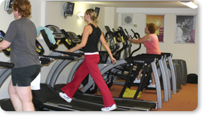

Cardio is short for cardiovascular, which refers to the heart. Cardiovascular exercise is exercise that raises your heart rate and keeps it elevated for a period of time. Another name for it is aerobic exercise. The kinds of exercise that are associated with cardiovascular workouts are things like jogging, fast walking, and swimming where there is no break in the routine.

A method of improving muscular strength by gradually increasing the ability to resist force through the use of free weights, machines, or the person's own body weight. Strength training sessions are designed to impose increasingly greater resistance, which in turn stimulates development of muscle strength to meet the added demand. Our section is equipped with the latest specialized machines.
Aerobics is an effective physical exercise which is often done to music. Apart from staying power, strength, flexibility, coordination, and tact are trained. Aerobics is very popular and helps strengthen the heart and lungs, providing a high-energy group fitness environment.